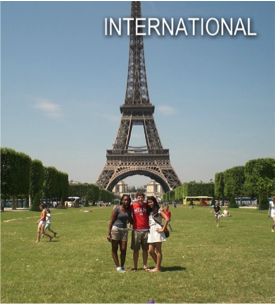
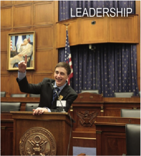
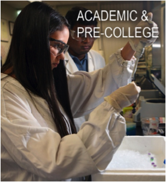
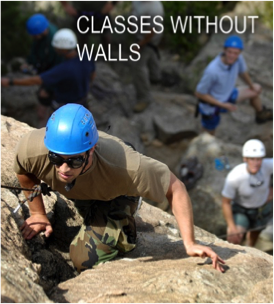

It is never too early to start planning your summer! Many structured summer programs and camps have deadlines in January and February. This Summer Program Sampler is meant to be a sampling of summer programs; it is not an exhaustive list. For more opportunities, please visit Summer Program Finder, Enrichment Alley, Teen Life, or Google.
You don’t have to pay for a structured summer program in order to have a valuable summer experience! Colleges are just as excited about students who work at paying jobs or spend their summers volunteering. For community service ideas, please visit www.dosomething.org, view a listing of local opportunities in Naviance (Naviance link), or see your college counselor.
Programs included in this list:
   
PRE COLLEGE:
Adelphi University Pre-College, NY
Live and learn on this beautiful campus minutes away from the excitement of New York City. Programs in Art & Technology, Business & Entrepreneurship, Exploring Musical Theater, Human Rights & Social Activism, Digital Media Production, Nursing, Teaching, Video Game Programming, Leadership, Psychology & Pop Culture, Medicine & Health, and Studio Art. July-August. www.precollege.adelphi.edu
Assumption College Residential Program, MA
Explore the liberal arts. Engage in classroom discussions, visit local and regional sites to see art, history, and politics in action, live in a college residence hall, and take a road trip to Boston. June. www.assumption.edu/summerprogram
Auburn University Summer Experience and Summer College, AL
Academic camps or college summer courses in environmental geology, creative writing, art of architecture, engineering, art, fish and aquaculture, food science, forestry, music, veterinary science, and more. www.auburn.edu/summercollege
Babson College Summer Study for High School Students, MA
Provides outstanding high school students the opportunity to explore ways in which they can impact the world through business and entrepreneurship. Students take college course, “Babson Entrepreneurial Development Experience.” Targeted toward high-achieving students the summer before junior or senior year. July 8 – August 9. www.babson.edu/summerstudy
Barnard College Pre-College Programs, NY
For high school girls. Enjoy a pre-college experience and college preparation while exploring New York City. Programs: Summer in the City, Liberal Arts Intensive, Young Women’s Leadership Institute, Dance in the City, Summer Science Seminars, and Entrepreneurs-in-Training. June and July. www.barnard.edu/summer
Beacon College Summer for Success, FL
3-week college immersion experience for students who learn differently. In this highly focused and fun summer experience, discover the basics you’ll need to thrive as you move from high school to college life. July. beaconcollege.edu/summer
Blueprint Signature Summer Programs, Various Locations
Attend a personal, innovative, and fun pre-college program that allows you to explore college life and gain critical skills to help you succeed. Courses: business, communications, computer science, engineering, environmental science, forensic science, law, medicine, psychology, veterinary science, and writing. Locations: Emory, Georgetown, Lehigh, Stonehill, Tufts, U. of California, U. of Colorado, UConn, U. of Florida, Michigan, and UVA. June or July. www.bpsummerprograms.com
Boston University Summer Term High School Programs, MA
Enroll in two non-credit courses ranging from creative writing to international politics to investigative journalism. This is a two-week program that also offers research internships. www.bu.edu/summer/highschool
Boston University Summer Programs
Science research internships, courses for college credit, intensive seminars, and college preview programs available throughout the summer. www.bu.edu/summer/high-school-programs/
Brandeis University Precollege Programs, MA
Hands-on, immersive experiences that give top high school students the chance to work with world-class faculty, develop leadership skills, and learn within the traditional Brandeis framework of intense academic inquiry. Programs in app design, Jewish studies, the future of medicine, Israel studies, and community service & social justice. June, July, or August.
http://www.brandeis.edu/highschool/index.html
*Carleton College Liberal Arts Experience, MN
Learn about the liberal arts! Take classes from Carleton professors, live on campus, and learn what it takes to be a successful college-bound student. For rising juniors of African American descent or rising juniors with an interest in African American culture. Nomination from guidance counselor required. July-August. www.go.carleton.edu/clae
Carleton College Summer Academic Programs, MN
Helps motivated students develop critical thinking and creative problem-solving skills. Three week academic programs: writing, language & global issues, quantitative reasoning, science institute, computer science, humanities. July and August.
www.go.carleton.edu/summer
Carnegie Mellon University Pre-College Programs, PA
Design, drama, fine arts, architecture, music, or video game design pre-collegiate programs. Grades 11-12. June – August.
www.cmu.edu/enrollment/pre-college
Colorado School of Mines “High School Girls Leadership Conference” – CO
Science is only possible through discovery, which means that everything was once a complex mystery. Join us for an experience that will help guide young women towards a future in STEM and provide them with the keys to make their own discoveries. https://commerce.cashnet.com/cwe_mep
College of William and Mary Pre-College Program in Early American History, VA
Earn four hours of college credit and choose from two American history courses: “Jamestown Through the American Revolution” and “American Revolution Through the Civil War.” Field trips to historic American landmarks further the course education. June and July. www.wm.edu/niahd
Cornell University Summer College, NY
One to six week programs are available. Further your education in the collegiate atmosphere and study from a full range of courses. Experience college from living in dorm rooms to exploring the college town. www.summercollege.cornell.edu
CyberMath Academy – Harvard University, MA or Stanford University, CA
Advanced and challenging courses from outstanding teachers pave the way for students to top colleges. Choose from a variety of options which include College Prep (SAT and College Counseling and Application Planning), Math, Coding, Robotics, Game Design, and Physics. July. https://cybermath.org
Davidson College “July Experience”, NC
Rigorous 3-week college immersion program for rising high school juniors and seniors who are highly motivated, collaborative, and self-disciplined. Join others from across the U.S. and around the world and take two liberal arts courses taught by full-time Davidson faculty, live in residence halls with other students, and participate in information sessions about the college admission process. This program will provide an opportunity for you to prepare for college academically and socially, expand your worldview, get individualized attention from Davidson faculty, explore the town of Davidson and Charlotte, and experience a taste of the college student life. https://www.davidson.edu/offices/july-experience
Duke University Summer Academy for High School Students, NC
Three-week, non-credit-bearing program that attracts students who represent the next generation of global citizens from around the world. Enroll in this elite program and immerse yourself fin an international experience designed to provide an academic and residential environment through which you will gain a global perspective on multiple areas of interest for young leaders. For students grades 9-12. http://summersession.duke.edu/high-school-students/duke-summer-academy
Duke University Summer College for High School Students, NC
Immerse yourself in an international college experience by enrolling in this elite program designed to provide the academic and residential environment conducive to collegiate success. Earn college credits in this four-week program. For current 10th and 11th grade students. July – August.
http://summersession.duke.edu/high-school-students/summer-college-for-high-school-students
Eckerd College Think Outside, FL
Early college programs for rising juniors and seniors. Choose one program: “Imagining Water in the 21st Century” explores how water has been understood across cultures, histories, and the arts and “Young Writers in Paradise” helps you explore and develop your talent in poetry and prose writing. June. http://www.eckerd.edu/summer-humanities/ and http://writersinparadise.eckerd.edu/young-writers/
Experience America, Various Locations
Video Game Experience at the University of Washington, Entrepreneurship at the University of Washington, or Fashion at FIDM at the University of Southern California. July. www.expamerica.net
Free Enterprise Leadership Challenge, Various Locations
Five-day overnight camp for rising 10th, 11th, and 12th graders to learn more about running your own business. You’ll receive strong academic content, experience an independent college setting, challenge your mind, get advice from real-world guest speakers, learn about business by actually running one, and test your leadership skills. July. www.felcexperience.org
Florida Institute of Technology 3D Printing Camp, FL
Explore 3D printing on campus for a week long intense tutorial on 3D printing. Learn basics of printing, troubleshooting, and build your own 3D printer that goes home with you. June and July. http://my.fit.edu/~bdavid/
Florida State University Young Scholars Program, FL
Residential science and math experience for outstanding students from Florida’s high schools. Students must apply for this program - room, board, and tuition are provided for every admitted student. June – July. www.bio.fsu.edu/ysp/
Furman University Summer Scholars, SC
Participate in classes and get a taste of college life. Take part in lectures, discussions, debates, laboratory research, field trips, group and individual projects, and much more. July. www.furman.edu/admission
George Mason University Youth Summit on the Environment, VA
Join students and faculty from all over the world. Hands-on, interactive program for students with an interest in the environment, conservation, and sustainability, and with the desire to explore careers in the fields of environmental science, conservation, policy, law, and engineering. Explore facilities and laboratories of the Smithsonian, National Geographic, and the National Zoo. http://wyse.gmu.edu/
The George Washington University Pre-College, Washington DC
Engage in rigorous academic experiences taught by expert faculty and
explore intellectual, cultural, and historic resources of Washington DC. Learn
biomedical engineering, business & economics, arts, government & politics,
history, international relations, medicine & health sciences, or public policy. Credit and non-credit programs. July and August. www.summer.gwu.edu/precollege
Georgetown University, Washington DC
Summer College, College Prep Program, International Relations, American Politics and Public Affairs, National Security and Counterintelligence, and Fundamentals of Business: Leadership in Global Economy. http://summer.georgetown.edu/
Harvard University Summer School, MA
Secondary School program in classic academic challenge and fun! Take college level classes that are both personally and academically rewarding. Grades 10-12. July – August. www.ssp.harvard.edu
Hillsdale College High School Summer Study & Travel Programs, MI & Abroad
Unique opportunity to earn three college credits while also traveling to cultural and historic destinations domestic and abroad. Courses in “The Land and Literature of England,” “Sir Winston Churchill and World War II,” “Western Civilization: Visions from Italy,” and “The Roots and History of American Liberty.” Application required. www.hillsdale.edu/hs-programs
Immerse Education at the University of Cambridge
Residential academic program with a diverse and enriching curriculum that provides a taster of what it’s like to study a subject at university level. Helps students better understand what subjects they should be pursuing at a higher level. Students reside in one of central Cambridge’s largest and most beautiful university colleges. Within the college’s historic walls, the program allows students to explore and further their knowledge of a chosen subject in an unrivalled academic environment. Students emerge more confident and ready to articulate what they have learned. https://www.immerse.education/
Indiana University Kelley School of Business “MEET Kelley,” IN
One-week business program for highly capable juniors (min. 3.4 GPA) from underrepresented groups. Attend classes, team up in a competition to create and present the best business plan, and experience college life. Participants only need to cover their transportation to and from Bloomington and personal expenses. All other program costs will be covered. June.
www.iu.edu/meetkelley
Jacobs University Summer Camp, Germany
Take a glimpse into what university life is like on an international campus. Take classes in “Social Sciences, Economics, and Management,” “Mathematics and Physics,” or “Energy, Resources, and Technology.” Students will also have the opportunity to book additional weeks of German language courses. July-August.
https://www.jacobs-university.de/study/summer-camps
Johns Hopkins University Pre-College Programs, MD
Participate in one of 36 selective academic programs. Become a university student for a few weeks. Get a taste of life on campus. Discover for yourself what Johns Hopkins is all about. June-July and July-August. www.jhu.edu/summer
The King’s College High School Summer Academy, NY
Designed for students who want to explore the development of the largest and most diverse city in the US: New York City. Study how cities flourish and how NYC specifically has influenced the economics and cultural development of America and the world. Enjoy lectures, discussions, and visits to world-famous landmarks, attractions, and restaurants. Learn about NYC in one of three tracks: media and journalism, political economy, or leadership. July. www.tkc.edu/summer-academy
Louisiana State University Summer Residential Camps, LA
Enjoy the unique resources of LSU, meet teens with similar interests, learn from top faculty members, and try out your independence. Architecture Camp or Leadership U. June or July. www.outreach.lsu.edu/precollege
Marist College Summer Pre-College Programs, NY
Take a course in a field you are passionate about while getting a taste of college life. Earn college credit and experience college living. Programs in Business, Fashion Merchandising, Fashion Design, Criminal Justice, Film & TV Production, Environmental Science, Game Design, Theatre, Creative Writing, Cybersecurity, History, Psychology, Entrepreneurship, Pre-Health, Sports Communication, and Pre-Law. www.marist.edu/precollege
McGill University Summer Academy, Quebec, Canada
High school students from all over the world will be welcomed on campus for two weeks to participate in classes, workshops, labs, and various activities introducing them to university life, McGill, and Montréal! Students will be able to live and eat in one of McGill’s residences and see for themselves why Montréal was rated the #1 Student City in the World (QS Best Student Cities 2017)! https://www.mcgill.ca/summeracademy/
Miami University Summer Scholars Program, OH
Two-week summer experience for rising juniors and seniors. Dive
deeply into a specific academic topic, engage in hands-on learning
activities, receive priority consideration for Miami merit scholarships
and undergraduate programs. www.miamioh.edu/summerscholars
New York University Career Edge Program, NY
Professionally-oriented intensive programs of study allow you to explore career options. Programs in social justice, art history, sports writing, climate change, computer science, creative writing, global affairs, marketing, filmmaking, journalism, architecture, graphic design, fashion design, finance, music, interior design, Chinese language, social entrepreneurship, investment banking, pre-law, real estate, restaurant entrepreneurship, screenwriting, cybersecurity, video game design, and web design. Experience university life by staying in an NYU dorm. July. www.sps.nyu.edu/hsacademycareeredge17
New York University Precollege, NY
Have you wondered what college is like in New York City? This is your chance to find out. Precollege offers the opportunity to experience NYU by living and learning in its community. Students focus on academics in the classroom, develop critical college-level writing skills, prepare for the college admissions process, and explore New York City’s endless cultural opportunities. July-August. www.nyu.edu/precollege
Northfield Mount Hermon School Summer Session, MA
Engage in intensive study of one academic subject. June – August. www.nmhschool.org/summer
Northeastern University “Accelerate: Pre-College Programs”, MA
Exceptional faculty deliver courses that combine innovative content, experiential learning, and a world-class environment that gives talented high school students a true Northeastern experience. Programs available: Engineering Innovation & Design, BioE Summer Immersion, Innovations in Health Professions, Experience Design, and Experiential Entrepreneurship. June and July. https://www.northeastern.edu/precollegeprograms/
Northwestern University College Prep, IL
Designed for students who want new academic challenges and the experience of real college life. 2 week seminars or 3-6 week courses. June and July. www.northwestern.edu/collegeprep
Oberlin College Foresight Leadership & Sustainability Initiative, OH
Take part in intensive, uniquely hands-on learning, facilitated by respected teacher-practitioners; visit inspiring sustainability initiatives, from community farms to corporate headquarters; develop leadership potential; foster a more diverse, inclusive sustainability movement; forge an ongoing network to support your future education and career. July – August. www.foresightlsi.org
Penn State University/Summer Discovery Pre-college Program, PA
For students in grades 9 – 12. Enrichment courses in business, computer science, sports management, sociology, crime scene investigation, law and government, math, public speaking and debate, study skills, and writing and literature. Specialty institutes in business and entrepreneurship, psychology, anthropology, and skills for college success. info@summerdiscovery.com
Phillips Exeter Academy Summer School, NH
Five weeks of academic study, athletics, and exploration July – August. www.exeter.edu/summer
Pioneer Academics Research Program – Online
Chart your own research journey, mentored by a distinguished professor. Pioneer students have the unique opportunity to interact with American professors from top-ranked universities in an intimate online learning environment to develop the skills needed to succeed in college. Students are guided in the study of one of many specialized fields and produce a capstone project showcasing the mastery of the subject. February-July or June-September. https://pioneeracademics.com
Purdue University Enrichment Programs for Gifted & Talented Youth, IN
Medical School Madness, Computer Modeling, Game Logic & Strategy,
Forensic Fusion, Engineering in Action, Bioengineering and more! June and
July. www.purdue.edu/geri
Project Discovery, Various Locations
Fine tune and discover your talents and abilities through very specialized and
creative summer experiences. Programs offered: Silicon Valley and Culinary.
www.projectdiscoveryprograms.com
Rensselaer Polytechnic Institute PREFACE Summer Program, NY
Two-week residential summer experience for talented rising 11th or 12th graders from groups that have been historically and traditionally underrepresented or underserved in science, engineering, and technological fields, and are interested in pursuing careers in engineering and technological professions. Application required.
http://doso.rpi.edu/update.do?catcenterkey=87
Rutgers University Pre-Engineering Summer Academy, NJ
Develop knowledge and skills and participate in real-life field experiences. This intensive program will introduce you to a variety of engineering areas: aerospace, biomedical, civil, computer, electrical, forensic, and mechanical. Students must have completed pre-calculus and physics. Online application is required.
http://summer.rutgers.edu/precollege-academies/preengineering
Sewanee: The University of the South Bridge Pre-Health and Field Science Program, TN
Opportunity for students whose backgrounds and experiences would contribute to and enrich the diversity of Sewanee’s academic community and who are interested in studying pre-health sciences, field sciences, and math. Whether you choose the pre-health track or the field science track, you will make strides toward college preparation, discover the benefits of deep mentorship, and make lifelong friends. June. http://www.sewanee.edu/bridge/
Sewanee: The University of the South Environmental Institute Pre-College Field Studies Experience (SEI), TN
Pursue environmental studies while exploring Sewanee: The University of the South – 13,000 acres of forests, lakes, caves, and rock outcrops. For rising high school juniors and seniors with a history of academic excellence who are passionate about the outdoors and interested in advancing their knowledge and skills in the study of the environment. June-July.
http://sei.sewanee.edu/
Sewanee: The University of the South Summa Theological Debate Summer Camp, TN
Opportunity for high school students to build their faith through intellectual channels. Gain tools for thinking, knowledge of the Christian theological tradition, skills in public speaking and debate, and cutting-edge engagement with topics such as religion and science, social ethics, and interfaith relations. Learn how to think carefully, imaginatively, and fluidly; how to express yourself clearly; how to explore faith in relation to science, history, and philosophy; and how to argue lovingly. summa.sewanee.edu
Smith College Precollege Programs, MA
For high school girls. Programs: Discovering Women’s History, Writing Workshop, The American College Immersion Program, Science and Engineering, Field Studies for Sustainable Futures. July and August. www.smith.edu/summer
Stanford University Pre-Collegiate Summer Institutes and Summer College, CA
Grades 9-12. Undergrad classes while earning Stanford University credit. Study sciences, humanities, arts and languages in this fabulous location near Palo Alto and the foothills of the Santa Cruz Mountains. Pick one or more of these programs: Stanford Sports Business Academy, Summer Humanities Institute, Summer Arts Institute, Artificial Intelligence Laboratory’s Outreach Summer Program, Summer College, Summer Institutes, Stanford University Mathematics Camp, University-Level Online Math and Physics Courses, and/or Stanford Online High School. June – August. www.precollegiate.stanford.edu
Stevens Institute of Technology Pre-College, NJ
Create something from to start to finish: a business plan, a video game, an investment portfolio, a short animation. Design your own portfolio project with cutting-edge technology in state-of-the-art facilities alongside world-renowned experts, CEOs, and inventors - all while exploring NYC. Programs in Cybersecurity, Civil Engineering Design & Architecture, Pre-Med (Biomedical Engineering), Pre-Med (Biology), Exploring Career Options in Engineering & Science, Engineering Bootcamp, Intermediate Computer Science, Intro to Coding & App Design, Game Design,
Electronic Music Production, Pre-Law STEM & Society, Virtual Reality, Entrepreneurship: From an Idea to a Startup, and Business Explorer. www.stevens.edu/admissions/pre-college-programs
St. John’s College Summer Academy, Various Locations
Annapolis, MD or Santa Fe, NM. Pre-college, residential program that nurtures critical thinking and personal growth. Explore works by some of the greatest thinkers of western culture and talk about their ideas in discussion-based classes. Participate in an eclectic array of workshops: poetry, writing, improvisation techniques, yoga, etc. Enjoy off-campus excursions to museums and historic sites. June – July. www.sjc.edu/sa2016
St. Lawrence University Summer Programs, NY
“Rebels, Hipsters, and Visionaries: The Beat Generation” (Humanities), “How To Be Your Pet’s Best Friend” (Social Science), “Crime Scene Anthropology” (Natural Sciences), “The Chemistry We Taste” (Natural Sciences), “Your Playlist: Musical Taste and Personal Identity in the Digital Age” (Humanities), “Create Short Story Fiction Writing” (Arts), “Medicinal Plants: an Introduction” (Natural Sciences), “Death and Medicine” (Social Sciences), “Physics of Musical Instruments” (Natural Sciences), “Hip Hop Culture & Society” (Humanities), “LGBTQ+ Youth Inclusion” (Humanities), “Astronomy: A Window to the Universe” (Natural Sciences), “Bots, Trolls, and Fake News: Dis/information in Digital Age” (Humanities), “Toys and Child Development” (Social Science), “Sustainable Landscapes” (Natural Sciences).
https://www.stlawu.edu/summer-programs
Summer Discovery, Various Locations
Pre-college enrichment, college prep, community service, ESL & TOEFL programs, research mentorship, and internships for high school students. www.summerdiscovery.com, www.discoveryinternships.com
Summer Fuel, Various Locations
Language and cultural immersion: Spain, France, Italy. Pre-college: Oxford, Harvard, Berkeley, Amherst. Social Entrepreneurship: Yale, Stanford. College Admissions prep: Tufts, Columbia, Berkeley. www.summerfuel.com
Susquehanna University Summer Learning Institutes, PA
Live on a college campus with other high school students who share your passion. Learn about ecology, business, creative writing, or music. June – July. http://www.susqu.edu/about-su/in-the-community/summer-high-school-programs
Syracuse University Summer College, NY
Two and six week programs offered. Programs are built for you to find your major, build your resume, further your education in the fields of art, music/theatre, engineering, law and communications. July – August. www.summercollege.syr.edu
Taft Summer School, CT
Grades 7-9 and 10-12. Students share a desire to spend five weeks improving their academic skills, broadening their knowledge, and having fun. July. www.taftschool.org/summer
Tulane University Career Explorations in Architecture, LA
Explore ideas methods, and issues of architecture. Lectures, studio time, digital workshops, field trips, discussions, and critiques. http://architecture.tulane.edu/career-explorations
Union College Educating Girls for Engineering (EDGE), NY
EDGE is a program designed for rising sophomore, junior, and senior girls interesting in engineering. The two-week residential workshop offers a unique opportunity to explore engineering fields in areas beyond basic math and science. Learn bioengineering, robotics, and communications. http://engineering.union.edu/edge
University of Alabama Early College “Summer on Campus”, AL
Live in a premier residence hall on The University of Alabama campus, take two classes with other college student, meet other UA Early College students from across the country, and participate in fun, engaging social activities.
http://uaearlycollege.ua.edu/index.php
University of Arizona Biosphere 2 Summer Science Academy, AZ
Hands-on, inquiry-based science research for middle and high school students. Contact your college counselor for more information about how to apply. July. http://biosphere2.org/education/student-science-academy
The University of Chicago Summer Session, IL
Ask critical questions using perspectives ranging from the humanities to the sciences. This innovative program will help you develop your critical thinking from a multidisciplinary approach. Choose from these courses: “UChicago Immersion,” “Research in the Biological Sciences,” “Stones and Bones,” “Arts & Sciences Summer in Chicago,” and “College Pathway Program in Economics.” June-July. summer.uchicago.edu
University of Dayton Engineering Programs, OH
“Summer Honors Engineering Camp” and “Women in Engineering Camp” - Design and build robots in a team project, solve real-world engineering problems, investigate career options, network with practicing engineers, learn how engineers creatively use knowledge and technology to improve the lives of others, conduct experiments, and use your creativity to solve practical problems and create remarkable inventions. go.udayton.edu/engr/honors_camp or go.udayton.edu/wie
University of Florida Science Summer Programs, FL
Programs in: Explorations in Biomedical Research (focus on translational
research, preparation for bioscience careers), Florida Youth Institute (immerse
in various agriculture, life science, and natural resources disciplines), Humanities and the Sunshine State: Florida Water Stories (students explore how Florida’s past has shaped the present and how today’s actions affect the future of the state – field trips to special collections, Florida landmarks, and social activities), Research in Environmental Toxicology (connects university researchers and students to promote interest in and preparation for environmental science-related careers), Science Quest (immerses students in various science disciplines to stimulate their interest and appreciation for the range of college and career opportunities), Student Science Training Program (research program for students considering medicine, math, computer science, or engineering careers with research participation with a UF faculty member). https://www.cpet.ufl.edu/students/
University of Florida Young Entrepreneurs for Leadership & Sustainability, FL
For motivated juniors and seniors who are interested in entrepreneurship, social entrepreneurship, leadership, and sustainability. Students will take two college-level courses and participate in evening and weekend programing including a Speaker Series, mentor partnerships with Entrepreneurs and Nonprofit Leaders, field trips, visits with Gator Athletes, and community service. June – July. www.ufyoungentrepreneurs.org
University of Georgia VetCAMP, GA
Students are involved in various activities aimed at evaluating their skills and competitiveness as future veterinarians, providing mentorship and helping them experience veterinary medicine as an exciting career path. Students are provided opportunities for observation of and participation in various services in the Veterinary Teaching Hospital, the Poultry Diagnostic and Research Center, and the Diagnostic Laboratories, as well as a field trip to the Georgia Aquarium for a behind-the-scenes view of the facilities. June. https://vet.uga.edu/academic-affairs/vetcamp
University of Miami Summer Scholars Program, FL
Sample college life, form friendships, explore south Florida, take classes, and earn six credits with peers from around the world, and explore a dozen exciting programs taught by UM’s faculty. Scholarships available. http://miami.edu/dcie/index.php/ssp
University of North Georgia (The Military College of Georgia) Summer Language Institute, GA
Programs carefully tailored residential language programs of study in Arabic, Chinese, Korean, and Russian. Activities are engaging, challenging, and fun with emphasis on learning the language through substantial interaction between students and native-speaking faculty. Earn 8 credit hours in 6 weeks. ung.edu/sli
University of Notre Dame Pre-College Seminars, IN
Summer Scholars Program: explore a field of study at the college level with Notre
Dame faculty. Leadership Seminars: engage in discussions on issues of global
concern under the tutelage of Notre Dame faculty. Study Abroad Rome: students
are introduced to the history and culture of the Eternal City. June – July.
http://precollege.nd.edu/summer-scholars/
University of Southern California Summer Programs, CA
2 and 4-week summer courses. Balance academic and campus life as you prepare for college. Students earn three college credits after completion of four-week course. On and off-campus activities to local attractions around Los Angeles are included. Programs in architecture, business, dance, engineering, global studies, journalism, music, performing/visual arts, pre-health/science, pre-law, public policy/real estate, and writing. July and August. http://summer.usc.edu
*University of Southern California Bovard Scholars, CA
Helps high-achieving rising high school seniors with financial need gain admission to and succeed at the nation’s top universities. Through expert admissions and financial aid assistance, comprehensive test preparation and personalized career exploration experiences, we aim to transform lives and build a new, diverse generation of dynamic leaders. The program includes an intensive, three-week residential experience during the summer on the USC campus and personal coaching throughout the college application and decision-making process, all at no cost to the student. Our scholars engage with guest speakers, industry experts, career specialists, and recent college graduates to define their personal pathway to college and beyond. https://bovardscholars.usc.edu/
University of Southern California “Frontiers of Energy Resources,” CA
Sponsored by Chevron, this summer educational camp introduces students to the science foundation of energy resources. They will also learn about the career possibilities in energy resources fields. Students selected for this competitive program are responsible for their own transportation to USC. Room and board are covered by Chevron. Application required. http://cisoft.usc.edu/uscchevron-summercamp/
University of Virginia UVa Advance Summer Program, VA
Four-week summer residential program for highly-motivated, rising high school juniors and seniors that offers an opportunity to experience college life. Enroll in two undergraduate courses, attend a series of academic prep workshops that prepare you for the challenges and opportunities undergraduate students confront, and participate in team-building exercises, on-Grounds recreational events, and excursions to unique sights around Charlottesville. http://summer.virginia.edu/uva-advance
Wake Forest University Summer Immersion Program, NC
This life-changing, two-week experience gives high school students the chance to try out potential careers, experience college life, make lifelong friends, and establish connections that will make an indelible impact on their future. Programs in Academic Discovery, Biosciences and Engineering, Business and Entrepreneurship, Law, Leadership, Medicine, Sports Marketing, Sports Medicine, and Technology. Work with Wake Forest professors to learn in the liberal arts tradition.
http://immersion.summer.wfu.edu/
Washington University Summer Experiences, MO
Participate in courses, college-readiness seminars, academic support groups, workshops, and a variety of weekend and evening social events. Scholarship assistance is available for students who demonstrate financial need. June, July, and August. http://summerexperiences.wustl.edu/
High School Summer Scholars Program: For rising juniors and seniors. Enroll in courses for credit and study alongside undergraduates. Select from a broad range of stimulating introductory courses in all academic areas.
High School Summer Institutes: For rising sophomores, juniors, and seniors. Explore a specialized interest, career, or major in this noncredit program. Combines traditional undergraduate course and lab curriculum with field trips, guest lectures, and hands-on activities.
Wellesley College EXPLO, MA
At EXPLO, you’re bound to try something new – in fact, that’s the whole point. During a summer at EXPLO, you can design a video game, rig a sailboat, open a restaurant, organize a fashion show, pitch a business, build a Mars rover, deliver a speech, play a guitar, spike a volleyball, or investigate forensic evidence at a mock crime scene. Pick from over 80 course offerings in the arts, humanities, sciences, business, world affairs, design, writing, and more. info.explo.org
Wentworth Institute of Technology SummerFAB, MA
Architecture workshop on making and building for students who have an interest in designing and constructing a full-scale structure, temporary art or temporary installation, creating a community-based project, earning college credit, and living on a college campus in Boston. www.wit.edu/summerfab
*Wolfeboro Summer Boarding School, NH
Gain remarkable academic growth in five weeks! Work in a college prep curriculum on individual goals. Gain academic credit in a required course and improve writing, reading, math, study skills, and executive function. Students learn confidence, productivity, study habits, and momentum. http://www.wolfeboro.org
Worcester Polytechnic Institute Frontiers and Launch Programs, MA
On-campus, residential, research, and learning experience for high school students interested in science, technology, and engineering. July and August. www.wpi.edu/+frontiers, www.wpi.edu/+launch
ARTS:
Architecture Camp at Auburn University, AL
Week-long camps in June and July for rising 11th and 12th graders. Program includes hands-on exercises, technical demonstrations, professional guest speakers, and ends with an architectural design project. www.auburn.edu/outreach/opce/summerexperience/architecture.htm
The American Musical and Dramatic Academy, NY
Summer conservatory program for talented high school students looking to advance their futures in the performing arts. Intensive training for acting, singing, and dancing in a college environment. www.AMDA.edu/hs
American University “Discover the World of Communication,” DC
Explore the field of communication. Choose from over 35 hands-on experiential classes including photography, animation, film production, flash fiction writing, public speaking, international communication, documentary filmmaking, and weather broadcasting. Learn from university faculty and use Washington DC as your learning laboratory. www.audiscover.org
Boston University College of Communication Academy of Media Production, MA
In the four-week program students create their own fiction or non-fiction films, videos, webcasts, and live multi-camera productions. Workshops, seminars, and guest lectures are complimented by site visits that provide firsthand experience. http://www.academyofmediaproduction.com/amp/
California College of the Arts Pre-College, CA
Offerings include animation, industrial design, jewelry, metal arts, painting-drawing, photography, graphic design, fashion, illustration, textiles. July. Grades 11-12. www.cca.edu/precollege
Denison University’s Reynolds Young Writers Workshop, OH
Experience small, intimate writing workshops and one-on-one interactions with Denison creative writing faculty and notable visiting writers who have made writing their career. Connect with a close-knit community of writing teachers, mentors, and peers from around the world in this residential program. June. https://reynolds.denison.edu/
Drexel University College of Media Arts & Design Summer Programs, PA
Offerings include architecture, design & merchandising, interior design, dance, digital fabrication, and music industry. July.
http://www.drexel.edu/westphal/about/summerHighschoolProgram/
FIDM Immersive Summer Program, CA
Learn fashion draping, fashion sketching, shoe designs, and the art of trend spotting. Learn from FIDM instructors, collaborate on creative projects, meet industry professionals, express your style, and get inspired! June.
www.fidm.edu/go/summerprogram
*Grammy Camp, Various Locations
Go to summer camp with Grammy pros! Get hands-on career training and learn from industry experts in this summer program for students interested in performance and music business. Financial aid is available. Nashville: May-June, Los Angeles: July. http://www.grammyintheschools.com/
ID Tech Camps, Various Locations
Learn about video game design, 3D game modeling, robotics, web, graphic and digital arts, video editing, and more. One and two week courses offered at over 60 universities in the US, including Rollins, USF, and U of Miami in FL. www.internaldrive.com/
Interlochen Arts Camp, MI
One of the most prestigious arts camps in the country, this rigorous and intensive summer program offers courses of study in theatre, visual art, music, dance, motion picture arts, and creative writing. Admission is highly selective and audition/portfolio based. http://camp.interlochen.org/
New York Film Academy, Various Locations
Locations in NYC, CA, and London. Film and acting program complete with field work,
seminars, and workshops. Workshop subjects include animations, high definition production, producing, and acting. No experience necessary. www.nyfa.com/summer_camp
Pratt Institute PreCollege Program, NY
Experience college-level study designed to help you develop your skills, explore areas
of study, and develop your portfolio. Take classes in your program “major”: architecture,
art & design, creative writing, cultural studies, digital imaging & photography, fashion
design, painting & drawing, graphic design, illustration, industrial design, interior design,
jewelry & metal arts, film & video, sculpture, or sequential art & the comic book. www.pratt.edu/precollege
Project Endeavor, Various Locations
Fine tune and discover your talents and abilities through very specialized and creative summer experiences. Programs offered: Hollywood, Fashion, and Dance. http://projectendeavorprograms.com/
*Project Fashion at University of Southern California
Make your fashion statement. Learn visual communication, product development, or fashion design. A hands-on summer camp for fashion-forward teens who are fascinated by all things style, design, and branding. Project Fashion’s holistic approach and experiential learning makes it unlike any other summer camp. www.fashion.experienceamerica.com
Ringling College of Art and Design PreCollege, FL
This is the very best of the art college experience. You’ll not only get in-depth immersion in major areas of study, but also hands-on studio instruction in foundational courses (for college credit) that provides fundamental skills and experiences similar to those in college. You’ll get information on how to put together a portfolio and complete college applications, and you’ll gain insight into the expanding world of creative careers. You will develop as an artist, a designer, a writer, and an entrepreneur, all while developing lasting friendships with others who share your passion for the arts. https://www.ringling.edu/PreCollege
Savannah College of Art & Design Summer Seminars, Atlanta, Savannah, or Hong Kong
Array of engaging programs designed to give you a chance to experience university life and pursue your passion for art and design. Attend workshops; attend social and cultural activities; and access extensive facilities, resources and libraries. Exhibit your work at the end of your session. July or August. scad.edu/summer
Sewanee Summer Music Festival, TN
One of the nation’s premier orchestra and chamber music festivals for students by audition. Mentorship with great artists at Sewanee: The University of the South. Scholarships available. June and July. www.sewaneemusicfestival.org
Sewanee Young Writers’ Conference, TN
Are you a high school student already bitten by the writing bug? Do you write stories but wonder how good you are? What would a professional writer, doing the same sort of work and publishing it, make of your stuff? If you’ve asked yourself these sorts of questions, this summer program may be for you. June – July. http://www5.sewanee.edu/ywc/
Spoleto Study Abroad, Various Locations
An Arts and Humanities immersion program designed for high school students interested in visual arts, photography, vocal training, creative writing, and drama in the Medieval town of Spoleto, Italy. Students are immersed in their area of artistic interest and twice a week travel to nearby cities such as Florence, Tivoli, Orvieto, and Siena. www.spoletostudyabroad.com
University of Michigan School of Art & Design Pre-College, MI
Increase your drawing skills, learn what it’s like to earn a degree in art
and design, or learn how to build a strong portfolio for admission review.
June, July, or August. http://stamps.umich.edu/pre-college
University of Virginia Young Writers Workshop, VA
Classes, workshops, and readings for aspiring poets, playwrights,
screenwriters, and writers. http://theyoungwriters.org/
US Performing Arts Camps, Various Locations
Study acting, dance, digital film, musical theater, or writing. Acquire outstanding training, improved skills, recruiting by top US colleges, and on-going mentoring! Locations: Barnard, Georgetown, Mount Holyoke, NYC (Chelsea Studios & Pace U), Oberlin, Pepperdine, Stanford, TCU, UC Irvine, and UCLA. June – July & July – August. www.usperformingarts.com
Washington University Sam Fox School of Design & Visual Arts Summer Pre-College Programs, MO
Learn about in architecture, art, or design while producing work in a real studio and living on a college campus. July.
www.internaldrive.com/
LEADERSHIP:
Boys State, FL
American Legion Boys State is among the most respected and selective educational programs of government instruction for U.S. high school students and is a participatory program in which students become part of the operation of local, county, and state government. At Boys State, participants learn the rights, privileges and responsibilities of franchised citizens. The training is objective and centers on the structure of city, county, and state governments operated by students elected to various offices. Instruction will also be presented on the law and court system, parliamentary procedure, and Florida political History. Citizens will gain hands-on experience to leadership by taking part in the political process through
role-play civic exercises. Ask your counselor for information on how to apply.
https://www.floridalegion.org/programs-services/boys-state/
Economics for Leaders
Held at University locations around the US and taught by economics
professors. The one-week programs introduce students to economic concepts
and tie these ideas to the practice of leadership. June, July, or August.
www.fte.org/student-programs/economics-for-leaders-program/
Girls’ Leadership Worldwide, NY
9th and 10th grade girls from diverse cultures & backgrounds come together to engage in workshops and activities designed to fully awaken the leader within them, using the leadership model of Eleanor Roosevelt. Spend time on the Eleanor Roosevelt estate, visit the United Nations in NYC, and live on the Vassar College campus. July. www.ervk.org/html/glw.html
Girls State, FL
High school girls who have completed their junior year spend an intensive week of study, working together as self-governing citizens. These young women learn government by actually creating a mythical state through the election of public officials on local, county and state levels and then by carrying out the duties of these respective offices. Two citizens from each Girls State are selected to participate in the annual Girls Nation program. This is a hands-on educational workshop, focusing on Americanism and the political process, sponsored by the Florida American Legion Auxiliary. The goal of the program is to help students to better understand democratic ideals and the part we as individuals play in carrying out these ideals. Ask your counselor for information on how to apply. https://alafl.org/programs/girls-state/program-overview/what-is-girls-state/
Global Youth Leadership Institute
Learn about leadership, race, religion, and environment. Experiential and emphasis on hands-on discovery. www.gyli.org
Junior Statesmen Summer School, Various Locations
Locations: Georgetown, Princeton, Yale, and Stanford. Gain intellectual appreciation for ethical principles of statesmanship. Speakers program, student run activities, and courses in history, communications, civic leadership, and government. July.
www.jsa.org/summer
Mount Holyoke College Take the Lead, MA
This women-only two-week program builds character and leadership qualities for real world experiences. July. www.mtholyoke.edu/summeraction
Norwich Academy: Drill Camp, VT
For students interested in advancing their individual and team skills in military drill and ceremonies while furthering their physical and mental strength. June – July. www.norwich.edu/admissions/summerprograms
Project Discovery, Various Locations
Fine tune and discover your talents and abilities through very specialized and creative summer experiences. Program offered in Leadership. www.projectdiscoveryprograms.com
St. Alban’s School of Public Service, DC
Four week, co-ed residential program that brings 35 of the best and brightest rising high school seniors from the U.S. and the world to the heart of Washington, D.C. where they undertake an in-depth exploration of government, politics, and public service. www.schoolofpublicservice.org/
Summer Springboard, Berkeley, CA & New Haven, CT
A unique blend of academic learning, self-discovery, and college planning. The
goal of the program is to help students learn more about who they are so they
can create a personalized roadmap for their lives. Programs available at UC
Berkeley and Yale: Civic Service & Leadership, Startup Law, Business &
Entrepreneurship, Medicine & Healthcare, Engineering & Innovation, Computer
Science, Creative Writing, and Digital Journalism.
www.summerspringboard.com/apply
United States Military Academy: West Point
Summer Leadership Seminars centered on leadership, ethics, academics,
duty, excellence, respect, sports. June. www.admissions.usma.edu
University of Notre Dame Leadership Seminars, IN
Explore topics affecting the global community to hone in on your own leadership capacities by improving communication and analytical skills. 100 students accepted with all expenses paid for by the University. College credit available. http://precollege.nd.edu/leadership-seminars/
Wake Forest University Leadership Institute, NC
Three-week program that equips high school students with an academic foundation necessary to become global citizens and provides an interdisciplinary and experiential learning environment characteristic of the liberal arts education. Discover how to change the way you learn, the way you think, and the way you lead. June and July. http://immersion.summer.wfu.edu/institutes/leadership-institute/
Wittenberg University President’s Leadership Academy, OH
Learn to harness your potential and lead with confidence. Gain hands-on experience in leadership labs and classes to develop the skills needed for emerging leaders to make positive impacts on their team. Identify your own leadership style; manage controversy with civility; understand servant leadership; integrate mission, purpose, and civic responsibility into your efforts; and lead your groups through strategic goal-setting and planning exercises. http://www.wittenberg.edu/pla
CLASSES WITHOUT WALLS:
Academic Treks
Adventure, experiential learning, and service with the world as your classroom. Marine biology, language immersion, community service, and wilderness adventures. www.gobroadreach.com, www.academictreks.com
Action Quest & Life Works International (Volunteerism Arm of Action Quest)
Global expeditions that challenge with high action, life-changing adventures that promote personal growth, teamwork and leadership. Sailing, scuba, marine bio. www.actionquest.com. www.lifeworks-international.com
Coastal Studies for Girls, ME
Science and leadership program for 10th grade girls located in Freeport, Maine. At CSG, students are immersed in experiential courses that draw inspiration from the beauty and intrigue of the Maine coast. They explore the natural world, dive into marine science research, and expand their leadership potential. July. http://www.coastalstudiesforgirls.org/
College of the Atlantic Summer Field Institute, ME
Through experiential learning and interdisciplinary studies, learn about human ecology in an ecologically diverse location and develop an appreciation for environmental sustainability. www.coa.edu/highschoolstudentprograms.htm
Deer Hill Expeditions, CO & Costa Rica
Cross-cultural service (Zuni and Hopi Pueblos, Navajo Nation, Tico & Bri Bri Villages in Costa Rica, Wilderness Conservation) and wilderness expeditions (rafting, canoeing, kayaking, surfing, mountain backpacking, rock climbing, and canyon backpacking). Scholarships available. www.deerhillexpeditions.com
Historic Landscape Institute at the University of Virginia
Offers students an introduction to the fields of landscape history, garden restoration, and historical horticulture, using the landscapes designed by Thomas Jefferson at Monticello and the University of Virginia as case studies and outdoor classrooms. Participants will engage in lectures, walking tours, workshops, field trips, and hands-on experiences in the gardens. monticello.org/hli.
National Outdoor Leadership School
Campcraft skills and leadership development through outdoor education and experiential learning. A wide variety of courses are offered in whitewater rafting, sea kayaking, rock climbing, wilderness first aid, backpacking, sailing and mountaineering throughout the United States as well as Australia, Mexico, the Amazon, Patagonia, New Zealand, the Canadian Yukon, Scandinavia, India, and East Africa. www.nols.edu
Outward Bound
Similar to NOLS, with heaver emphasis on leadership skills and group
dynamics. Courses throughout the United States as well as abroad.
www.outwardbound.com
Project Discovery, Various Locations
Fine tune and discover your talents and abilities through very specialized
and creative summer experiences. Program offered in Sport & Fitness. www.projectdiscoveryprograms.com
Sea High School Summer Seminars
Explore the field of oceanography from a summer at sea on a professional research sail boat. Programs are offered in the Gulf of Maine or the coast of California. Receive 3 college credits from Cornell University or USC. No sailing experience necessary. July. www.sea.edu
Sustainable Ocean Studies, ME
Challenging and fun program that promotes ecological, economic, and cultural sustainability in the Gulf of Maine. Students conduct field research in a variety of marine ecosystems and have unique opportunities to observe and contribute to local preservation efforts. You’ll camp, kayak, and meet with the scientists and people who live, work, and depend on the ocean. This 24-day, on-the-go program is open to students entering grades 10-12. www.waynflete.org/sos
The Experiment in International Living, Various Locations
Three to five-week substantive summer abroad programs that focus on cultural immersion, experiential living, and making meaningful connections across national, linguistic and cultural borders. 28 countries to choose from. www.experimentinternational.org
Where There Be Dragons, Various Locations
Dragons combines rugged travel, volunteering, foreign language study, trekking, homestays, internships and the study of culture and philosophy in Asia, Africa, Latin America, Southeast Asia and the Middle East. www.wheretherebedragons.com/